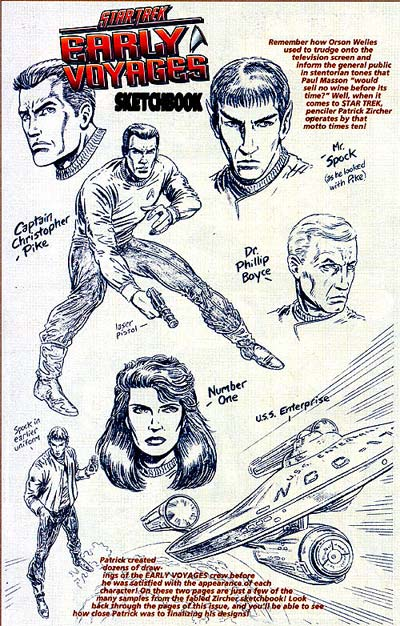
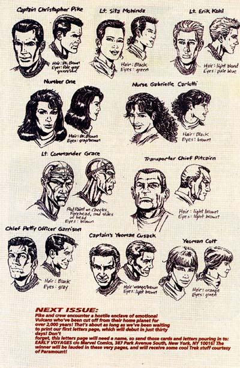

|


|

|
Gênese
| Episódios I Reflexões
| Palavras do autor | Palavras
do artista Gênese Material produzido por Salvador Nogueira para o Trek Brasilis Em 1996, a marca Jornada nas Estrelas estava com grande popularidade, e parecia não haver fim para a geração de spin-offs e produtos baseados na franquia. O furor em torno do novo filme da Nova Geração, "Primeiro Contato", somado à produção incessante de Deep Space Nine e Voyager na televisão, parecia apontar uma vida longa e próspera. Foi nisso que apostou a Marvel Comics, ao aproveitar a chance deixada por sua maior rival e adquirir integralmente os direitos de publicação de quadrinhos de Jornada. Antes pulverizados entre a DC (Série Clássica e Nova Geração) e a Malibu (Deep Space Nine), eles agora estariam centrados numa só editora. Com a euforia reinante, a Marvel não poupou a criação de títulos novos. Foram criadas as revistas mensais de Deep Space Nine e Voyager, além de uma edição mais polpuda e bimestral com histórias da Nova Geração e da Série Clássica, chamada "Star Trek Unlimited". Mas os grandes destaques acabaram sendo os títulos originais, praticamente spin-offs novos de Jornada, só que em quadrinhos. Surgiram "Starfleet Academy" e "Early Voyages". A primeira se concentrava nas aventuras de um grupo de cadetes da Academia (entre eles Nog, o sobrinho de Quark), e, apesar dos temores dos fãs, a publicação se saiu muito bem. Mas nada conseguiu atingir a popularidade e a qualidade de "Early Voyages". Essa revista é basicamente a resposta à pergunta que todos os fãs já fizeram um dia: e se o capitão Christopher Pike acabasse sendo mantido como protagonista da série, a exemplo do que acontece em "The Cage"? Que tipo de Jornada nas Estrelas nós teríamos? Os escritores Dan Abnett e Ian Edginton, auxiliados por artistas espetaculares como Patrick Zircher e Javier Pulido, deram vida às aventuras de Pike, que comandou a Enterprise uma década antes de James T. Kirk se tornar uma lenda viva por todo o quadrante. A série trouxe todos os personagens vistos em "The Cage", e a aparência da maioria deles era exatamente a mesma vista no piloto. Apenas os atores que interpretaram o navegador José Tyler e o doutor Philip Boyce não puderam ser contatados para autorizar a reprodução de seus rostos em desenho. Mas a Número Um (interpretada por Majel Barrett), Chris Pike (Jeffrey Hunter) e todos os outros estão lá.  Além deles, foram introduzidos novos personagens, como o engenheiro-chefe indígena Grace, um alienígena com poderes psicopirotécnicos, Nano, que servia como oficial de comunicações, e a piloto, tenente Mohindas. Os recém-chegados caíram como uma luva no formato da série e trouxeram maior riqueza e opções aos roteiristas, sem a perda do tom original. Com roteiros criativos, histórias compatíveis com a premissa "prequel" da série e a dose certa de inovação e de saudosismo retrô, "Early Voyages" possivelmente se tornou a mais memorável das séries em quadrinhos ambientadas no universo de Jornada nas Estrelas. Para muitos, acabou se tornando a série que Enterprise não conseguiu ser. Infelizmente, apesar do potencial inesgotável e do sucesso junto aos exigentes fãs, as coisas acabaram não saindo tão bem. A Marvel se viu surpreendida por uma crise financeira sem precedentes, que obrigou a empresa a pedir concordata e cortar abruptamente vários de seus títulos. Um a um, todas as revistas de Jornada foram canceladas. "Early Voyages" foi uma das últimas a cair, mas acabou sendo também encerrada. Sua última edição, para que se tenha uma idéia do estado em que as coisas terminaram, era um cliffhanger, que obrigatoriamente pedia uma continuação. Apesar do fim prematuro, a série segue sendo um marco na história dos quadrinhos de Jornada. Para a infelicidade dos fãs brasileiros, como a Marvel não detém mais os direitos sobre Jornada nas Estrelas, esse material existe hoje numa espécie de "purgatório editorial" e não pode ser negociado para nenhuma editora nacional. Apenas 17 edições foram publicadas nos EUA, entre fevereiro de 1997 e junho de 1998, mas foram suficientes para reservar um espaço especial no coração (e na prateleira) de seus leitores.  |